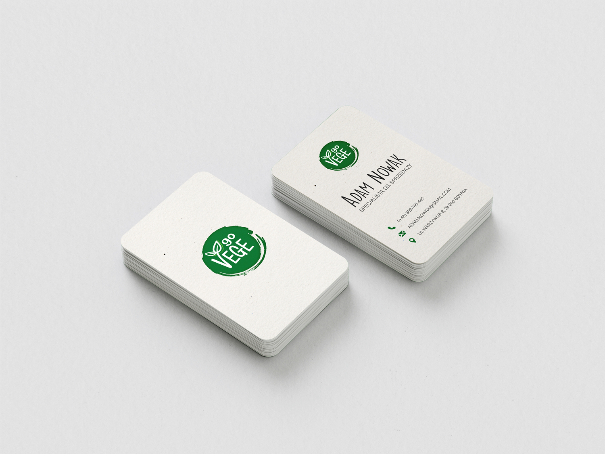

GoVege
Facebook Social Media Post Ideas
Post ideas for GoVege that promote a healthy lifestyle and plant-based diet (practice project).


Facebook Cover Photo Idea
Cover photo idea for GoVege on Facebook (practice project).


GoVege Business Cards
Business card design for GoVege.

Tote Bag Project – Front
Project of tote bag for a Vegan Day – Go Vege

Tote Bag Project – Back
Project of tote bag for a Vegan Day – Go Vege